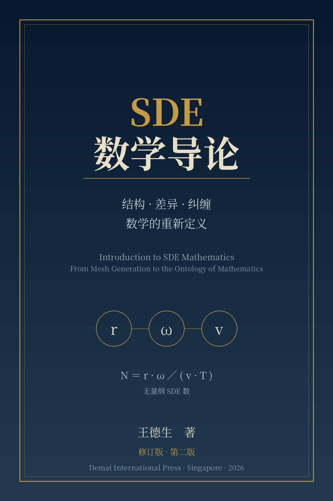

专著选读一
第五章 伞模型：SDE计算数学的统一框架
伞不是点。给纠缠一个半径、一个重叠度、一个传播速度，传统数学就成为三重退化的特例——本章给出伞模型的定义、三参数、退化谱系与五个可检验命题。
阅读全文 →
一部纲领性著作在第二版最容易做的事，是把宣称的范围再扩大一圈；最难做的事，是把第一版讲得太满的地方讲回来。本版选了后者。
一、新增第四十二章「最近邻交手」。第一版四十条文献集中在计算数学与哲学两端，而本书赖以立论的三块中间地带——复杂性科学的临界性研究、非局域耦合振子的分岔理论、组合优化中的劣解接受策略——一条也没有。本章补上这笔账：逐条陈述最近邻的原始主张，承认重合，指认剩余，并为每处剩余给出一条可以判本书输的预测。由此作废第一版六处优先权措辞，其中包括「几何是视觉的数学」这一判断——Poincaré 在 1902 年已经写下，本书的贡献只限于把它形式化。
二、新增附录F「本书的死法」。七条编号的证伪条件，每条写明判据、实施方案与若成立则作废的范围；其中四条是高风险条目。债务清单不构成可证伪性，因为「尚未证明」永远可以推给时间，而「若X出现则我错」不能。
三、三处实质更正。命题5.3 关于「重叠带来分辨率增益」的论断被撤回——重叠度不是独立于半径与节点密度的自由参数，重叠买的是稳定性与跨尺度耦合，不是分辨率；定理11.2(i) 因证明缺口（时间平均的收敛率不能转为逐步增量的衰减率）降级为猜想 C6；§6.7 中「人脑 N≈0.14 恰好落在秩序—介生边界上」的推论被撤回，并新增 §6.10 三态阈值标定协议——在标定之前，绝对定位陈述没有内容。
伞不是点。给纠缠一个半径、一个重叠度、一个传播速度，传统数学就成为三重退化的特例——本章给出伞模型的定义、三参数、退化谱系与五个可检验命题。
阅读全文 →修订版新增。把本书的每一块承重构件放到最近的先行者旁边：混沌边缘、非局域耦合振子、模拟退火、Poincaré的表象空间、无量纲群家族——承认重述，指认剩余，并为每处剩余给出一条判本书输的预测。
阅读全文 →修订版新增。七条编号的死法：什么样的观测会让本书的相应部分作废。每条给出判据、实施方案与作废范围，其中四条是高风险条目。
阅读全文 →本书从一个纯技术问题出发：如何生成高质量的计算网格。作者的数学生涯始于 Voronoi 剖分与 Delaunay 三角化，而正是在这里，一个从未被明确陈述的公理浮出水面——相容性公理的六重约束：conforming 网格、合法中间态、质量单调性、确定性、可审计性、固定点收敛。第一编证明这六条不是数学必然而是物理假设，并以 Santos 定理给出它的不完备性。
第二编给出处方：伞模型的三个参数与无量纲的 SDE 数，把有限元、无网格方法、peridynamics、分数阶微积分统一为同一个连续方法谱上的不同参数点，并给出五个可检验的中间命题。第三编给出算法与神经科学证据。第四编从伞模型重新定义数学对象、数学运动与数学证明，并提出「几何是视觉SIO的数学」这一诊断，据此给出触觉几何的公理化初探。第五编把框架推向符号学、逻辑学、AI 诊断与文明理论。
全书对每个命题标注 A 到 E 五级成熟度：A 级可直接引用，D 级是数学债务，E 级只是方向。这份分级、十个开放问题、七条死法与第四十二章的作废清单，共同构成本书的诚实度装置——它们不是本书的失败，而是它最有价值的产出之一。
王德生，计算数学博士，SDE发生学创立者，德麦国际创办人。早年从事网格生成、有限元与自适应算法研究，曾在中国科学院开展博士后研究，后任职英国斯旺西大学，并在新加坡南洋理工大学从事教学、科研与博士培养工作十三年。现于新加坡推进跨学科写作、SDE Universes 与 SDE 智能体集群建设。